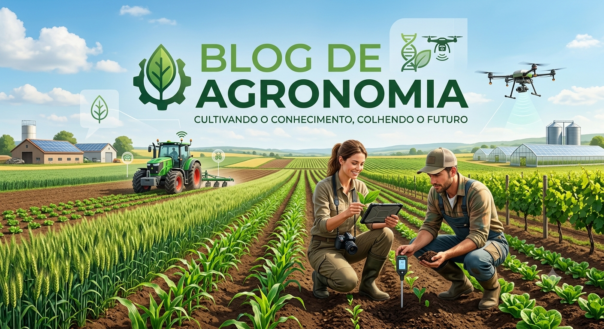

Saúde e Bem-estar
Mantenha a vacinação em dia e faça passeios regulares para garantir a alegria do seu amigo!
Inovação no campo: Tecnologias, soluções e tendências para o futuro do agronegócio.

Mantenha a vacinação em dia e faça passeios regulares para garantir a alegria do seu amigo!

Por: Marcelo Paludetto
Boas-vindas ao meu novo blog! Aqui vou compartilhar dicas de programação e curiosidades da área de tecnologia.
Por: Marcelo Paludetto
Boas-vindas ao meu novo blog! Aqui vou compartilhar dicas de programação e curiosidades da área de tecnologia.